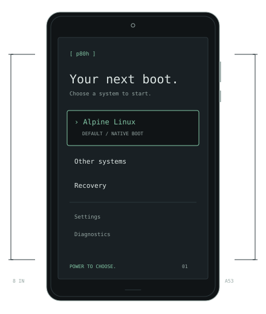
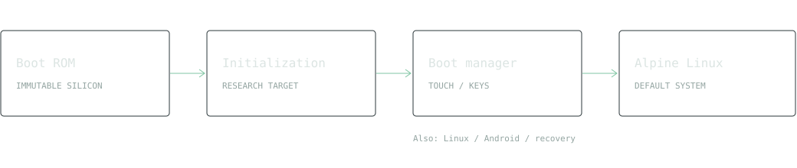

TECLAST P80h · MT8163 · OPEN RESEARCH
Small tablet.
Open possibilities.
A quieter path from silicon to Alpine.
Our boot manager. Native Linux. Every step documented.
Foundation stage / no flashable firmware release yet

01 / ARCHITECTURE
From power to possibility.

The silicon Boot ROM stays immutable. Writable firmware stages are research targets. Direct OS boot; no kexec.
02 / FIELD WORK
Evidence before checkmarks.
Implemented means code exists. Verified means the stated behavior was observed.
-
{{milestones}}
03 / THE DEVICE
One subsystem at a time.
Historical results are leads. This table records the new project's evidence.
| Subsystem | State | Evidence / next gate |
|---|
04 / VISUAL LOG
Show the real thing.
Real screenshots will appear with run IDs and source revisions after capture and privacy review. The illustration above is a design concept.
› native boot
› auditable sources
› identity-free releases
05 / BUILD IT IN THE OPEN
Sources first. Artifacts with context.
Experimental host tools are separate from tablet firmware. No proprietary firmware or stock images are distributed.